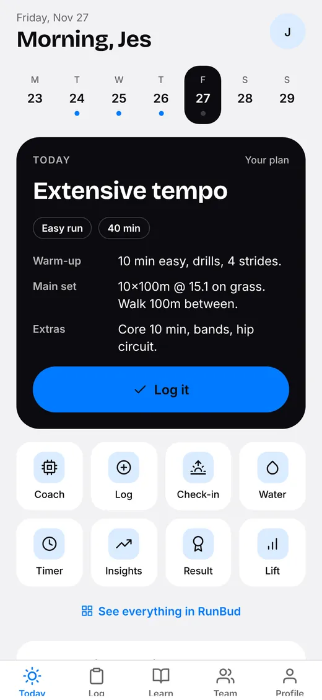
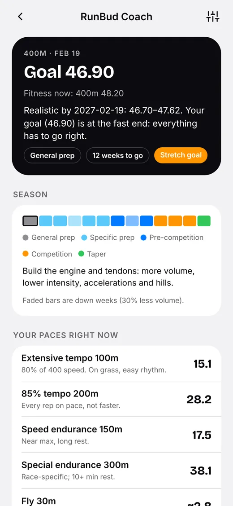
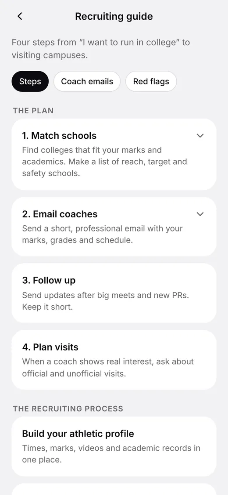
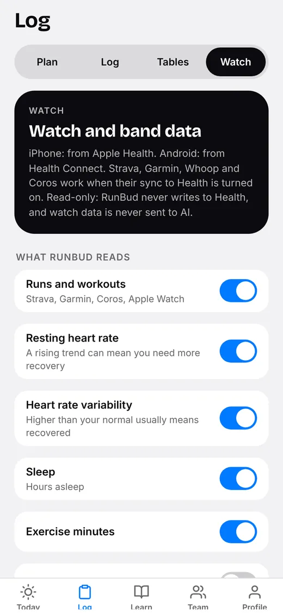

Have a coach
- Your coach's workouts show up on Today when they're released
- On those days, RunBud Coach stays out of the way
- You choose exactly what your coach sees
- Be on more than one team, like school and club
For athletes
Follow your coach's plan or let RunBud Coach build one. Log in seconds, see how you're recovering, and watch your progress add up.
Open the app and the day's workout is the first thing you see, part by part.

Switch between the two any time under Team, with "I coach myself."

No AI writes your plan. It follows coaching rules, uses your numbers, and tells you why.
| You give it | It does |
|---|---|
| Your event, goal mark and goal meet | Counts back from the meet in phases, with a lighter week every fourth week |
| Your best marks | Converts them across distances to set paces, and shows a realistic range for your goal |
| Your week: practice, open or off days, and minutes | Places sessions so hard days never land back to back, and counts practice as part of the week |
| Your morning check-in | Turns a hard day into recovery when you're sick, in pain or short on sleep |
| Your logged splits | Notices when you fade or miss days, and adjusts the next weeks |
Works for sprints, hurdles, 400 and 800, distance, jumps, throws and multi-events. If you edit a session it made, it leaves your version alone.

Minutes, effort 1 to 10, reps and splits, weight-room sets and the shoes you wore.
Time reps and rest at the track. Splits save straight to your log.
Races and time trials. New bests are marked and feed RunBud Coach's paces.
Flying 30s, jumps and lift tests, so you can see power and speed change.
Runs from Apple Health or Health Connect fill in automatically, including Garmin, Coros, Strava and Whoop when they sync there.
A countdown and taper check for each meet, and mileage on every pair of shoes.


Readiness, training load with fitness, fatigue and form, progress on your marks and lifts, and patterns in how you feel.
This week against last week: minutes, sessions, effort and how you recovered.
Every number you've logged in sortable tables, from splits to lifts.

Join with a code from your coach. Then choose, for each role, what they can see. Change it any time.
| Your data | Coaches | Athletic trainers | Nutritionists |
|---|---|---|---|
| Sessions | Shared | Shared | Not shared |
| Results and PRs | Shared | Not shared | Not shared |
| Check-ins | Shared | Shared | Not shared |
| Watch data | Not shared | Not shared | Not shared |
Team chats follow strict safety rules. Read how messages work.
Strength by event, stretching, 15 common track injuries with self-checks, a sleep calculator, fueling and mental training, each with sources.
Ask about pain, fueling or training. Verified doctors, athletic trainers and dietitians carry a badge.
A recruiting guide, a coach email maker, school matching and scholarship information.


Make your account, then sign in on your phone.